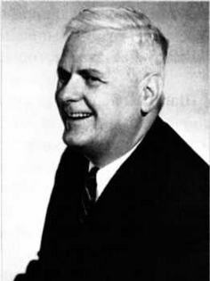
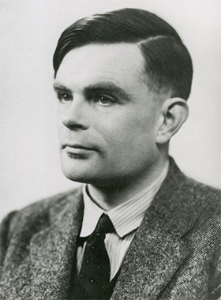

class: center, middle # «Происхождение видов» в языках программирования --- # Пускай цветут тысячи цветов Уже: - Promise - async/await - generators Скоро: - async iterators - optional chaining operator - pipeline operator --- # Ты помнишь, товарищ, как все начиналось? .left-column-50[ Синхронные вычисления: ```javascript var res1 = doSync1(start) var res2 = doSync2(res1) var res3 = doSync3(res2) ``` Или просто: ```javascript doSync3(doSync2(doSync1(start))) ``` ] .right-column-50[ Асинхронные вычисления: ```javascript doAsync1(start => { doAsync2(res1, res2 => { doAsync3(res2) }) }) ``` ] --- # Двухцветный язык Используем асинхронное вычисление внутри синхронного: ```diff -function addTwo(start) { +function addTwo(start, cb) { - return doSync(start) + 2 + doAsync(start, res => cb(res + 2)) } ``` ```javascript blue•function doSomethingAzure() { // Это синяя функция(синхронная) } red•function doSomethingCarnelian() { // Это красная функция(асинхронная) } blue•function doSomethingAzure() { doSomethingCarnelian()•red; // Ошибка - нельзя вызвать красную функцию внутри синей } ``` Ссылки: - [Статья Bob Nystrom](http://journal.stuffwithstuff.com/2015/02/01/what-color-is-your-function/) - [Доклад Андрея Саломатина](https://www.youtube.com/watch?v=OGSppLmGchY) --- # Так в чем разница? .left-column-50[ Синхронное вычисление: ```javascript var res1 = doSmth1(start); var res2 = doSmth2(res1); var res3 = doSmth3(res2); ``` <img src="./img/cf-diagram-sync.svg" /> ] .right-column-50[ Асинхронное вычисление: ```javascript doSmth1(start => { doSmth2(res1, res2 => { doSmth3(res2); }); }); ``` <img src="./img/cf-diagram-async.svg" /> ] --- # Похожие паттерны: обработка ошибок .left-column-50[ Без обработки ошибок: ```javascript var res1 = doSmth1(start); var res2 = doSmth2(res1); var res3 = doSmth3(res2); ``` <img src="./img/cf-diagram-sync.svg" /> ] .right-column-50[ С обработкой ошибок: ```javascript var res1 = doSmth1(start); if (!isError(res1)) { var res2 = doSmth2(res1); if (!isError(res2)) { var res3 = doSmth2(res2); } else { handle(res2) } } else { handle(res1) } ``` <img src="./img/cf-diagram-error.svg" /> ] --- # Похожие паттерны: проверка на null .left-column-50[ Без проверки на null: ```javascript var res1 = doSmth1(start); var res2 = doSmth2(res1); var res3 = doSmth3(res2); ``` <img src="./img/cf-diagram-sync.svg" /> ] .right-column-50[ С проверкой на null: ```javascript var res1 = doSmth1(start); if (!isNull(res1)) { var res2 = doSmth2(res1); if (!isNull(res2)) { var res3 = doSmth2(res2); } } ``` <img src="./img/cf-diagram-null.svg" /> ] --- # Control-flow > В computer science, control flow (порядок вычислений) это способ упорядочения инструкций программы в процессе её выполнения. > > -- <cite>Wiki</cite> Высоко-уровневые: - `throw new Error` - `return res`, `yield res` - `async/await` - `switch ... case` - `break`, `continue` - `for` Низко-уровневые: - `if/else` - `while` - `{ ... }` [Теорема Böhm-Jacopini](http://www.cs.cornell.edu/~kozen/papers/bohmjacopini.pdf) --- # GOTO .center-text[ <img src="./img/goto.jpg" width="65%"/> <img src="./img/goto_example.gif"/> ] --- # Немного истории Прародитель всех управляющих конструкций: .center-text[ `if value then goto label` ] .left-column-50[ ```c i = 1; while(i < 4) { print(i); i = i + 1; } ``` ] .right-column-50[ ```c i = 1 START: if i = 4 then goto END print(i) i = i + 1 goto START ``` ] .center-text[ <img src="./img/machine-turing.png" width="85%" /> ] --- # Все что тебе нужно это условный goto .left-column-50[ Вычисление: `c = add(inc(a), dec(b))` Порядок вычислений: 1) `inc(a)`, `dec(b)` 2) `add(inc(a), dec(b))` <img src="./img/strict.svg" /> ] .right-column-50[ Условный goto: `if add(a, b) then goto LABEL` или `if(add(a, b), goto LABEL)` Порядок вычислений: 1) `add(a, b)` 2) `if (add(a, b))` 3) `goto label` <img src="./img/if-order.svg" /> ] --- # New World Order Придумаем новый порядок вычисления: .center-text[ `c = add(inc(a), dec(b))` ] 1) `add(placeholder1, placeholder2)` 2) `inc(a)` 3) `dec(b)` .center-text[ <img src="./img/lazy.svg" /> `if(add(a, b), goto LABEL)` ] 1) `if(placeholder1, placeholder2)` 2) `add(a, b)` 3) maybe `goto label` --- # Пример IRL .left-column-50[ ```javascript var x = {} x && x.obj && x.obj.prop ``` <img src="./img/lazy-example.svg" /> ] .right-column-50[ ```javascript var x = {} and(and(x, x.obj), x.obj.prop) ``` <img src="./img/strict-example.svg" /> ] --- # Это нормально! .left-column-50[ Нормальный порядок или Call-by-name a.k.a call-by-need или Ленивые вычисления Сначала функция, аргументы потом Полны по Тьюрингу - можно вычислить что угодно ] .right-column-50[ Аппликативный порядок или Call-by-value или Энергичные вычисления Сначала аргументы, функция потом Не полны по Тьюрингу - не все можно вычислить ] --- # Мои вычисления сильнее твоих! 1936 - первые языки программирования: .left-column-50[  Лямбда-исчисление В основе - ленивые вычисления 1 доступная операция ] .right-column-50[  Машина Тьюринга В основе - энергичные вычисления 3 операции ] .center-text[ 1945 - Архитектура Фон Неймана. Вдохновлена машиной Тьюринга Неполнота энергичных вычислений восполнена операторами control-flow ] --- # Control-flow как продолжение Программирование в стиле передачи продолжений Continuation-passing style: Асинхронные вычисления: ```javascript doAsync1(res1 => { doAsync2(res1, res2 => { ... } ) }) ``` Вычисления с обработкой ошибок: ```javascript doWithErrors1(res1 => { doWithErrors2( res1, res2 => { ... }, handleErr ) }, handleErr) ``` --- # Ввводим call/cc .left-column-50[ ```javascript var a = 1 + 2; var b = a + 4 // 7 ``` ```javascript var firstCalc = cont => cont(1 + 2) var b = firstCalc(a => a + 4) // 7 cont === a => a + 4 ``` ] .right-column-50[ ```javascript var r var a = callcc(cont => { r = cont; cont(1 + 2) // 7 return 1 + 2 }); var b = a + 4 // 7 r(1 + 2) // 7 ``` ] --- # Полезный пример: исключения ```javascript var cont; function throw (err) { cont(err); } function try(program, handleErr) { var res = callcc(c => { cont = c; program() }) if (isError(res)) { handleErr(res) } } try( () => { var a = doWithErrors() // throw(new Error()) ... }, err => { ... } ) ``` [Writing exceptions by contituations](http://courses.cs.washington.edu/courses/cse341/04wi/lectures/15-scheme-continuations.html) --- # Что можно еще реализовать? - алгебраические эффекты - generators, async/await - fibers, coroutines --- # Control-flow как вычисления высшего порядка ```javascript doSmth1(doSmth2().fio) ``` Перейдем от вычисления значения к функции которая вычислит значение потом: `doSmth2() -> () => doSmth2()` ```javascript pipe(() => doSmth2(), x => x.fio, fio => doSmth1(fio)) ``` --- # Исправим NPE ```javascript var x = {} x && x.obj && x.obj.prop ``` .left-column-50[ ```javascript function pipe(...fns) { return value => { var res = value fns.forEach(currFn => { res = currFn(res) }) return res }; } pipe( x => x.obj, obj => obj.prop )(x) ``` ] .right-column-50[ ```javascript function pipeWithNullable(...fns) { return value => { var res = value; fns.forEach(currFn => { if (!isNil(res)) { res = currFn(res) } }) return res }; } pipeWithNullable( x => x.obj, obj => obj.prop )(x) ``` ] --- # Причесывание интерфейса ```javascript var x = {} x && x.obj && x.obj.prop ``` .left-column-50[ ```javascript function Option(value) { this = value; } Option.prototype.then = fn => { this = isNil(this) ? this : fn(this) } ``` ] .right-column-50[ ```javascript var x = {}; var val = new Option(x) .then(val => val.obj) .then(obj => obj.prop) ``` ] --- # А что если сделать нормально? - `of`, `pure`, `unit` - *Как завернуть значение в монаду?* - `flatMap`, `bind`, `return` - *Как развернуть значение из монады?* Законы монад: - Left identity: `flatMap(f, of(x)) === f(x)` - Right identity: `flatMap(of, x)` - Associativity: `flatMap(g, flatMap(f, x)) === flatMap(x => g(f(x)), x)` [Не нарушайте эти правила!](https://www.sitepoint.com/how-optional-breaks-the-monad-laws-and-why-it-matters/) **Бойтесь Хаскелл-полиции!** --- # Монады повсюду! - `Promise` a.k.a `Task` a.k.a `Future` - `Optional` a.k.a `Option` a.k.a `Maybe` - `List` - `Either` a.k.a `Try` a.k.a `Error` - `Observable` --- # Два способа? Монады и продолжения изоморфны и эквивалентны по мощности [Representing Monads](http://citeseerx.ist.psu.edu/viewdoc/download?doi=10.1.1.43.8213&rep=rep1&type=pdf) Это два выражения одного и того же - **control-flow** Control-flow восполняет неполноту энергичного порядка вычислений [Lazy Evaluation and Delimited Control](http://www.osl.iu.edu/publications/prints/2009/garcia09popl-lazy.pdf) --- # Новые вызовы [Чума программирования в XXI веке - побочные эффекты](http://blog.csssr.ru/2017/10/07/side-effects/) Способы решения: - монада IO - алгебраические эффекты - обмен сообщениями --- # Путь в тысячу миль начинается с первого шага